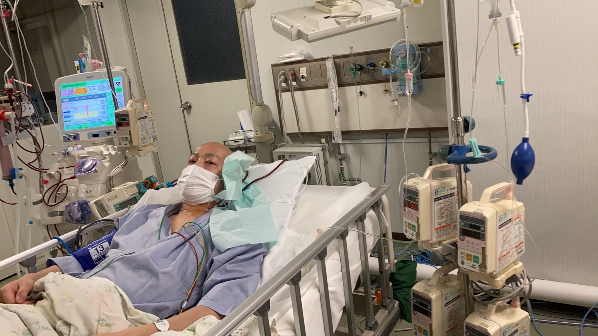

鳥海光汰です！ちんこ！！と呼んでください！
現在は家庭教師とデリバリーのバイトをしています！
プログラミングは初学者で、htmlとcssをかじった程度です。
大学4年生の三月から白血病と診断され、ほぼ一年間入院していました。白血病とは
写真は抗がん剤を排出できなくなり、結構ピンチな時の自分です！笑
今（2022年5月現在）も通院しながら社会人になるのを目指しています。
少しずつでも技術をつけて、たくさんお金を稼いで自分の健康保険分を納税したいです！笑